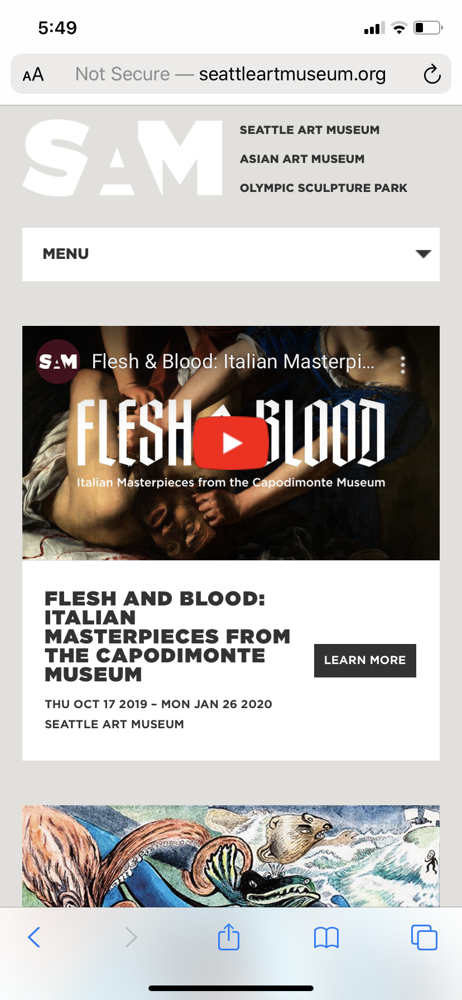
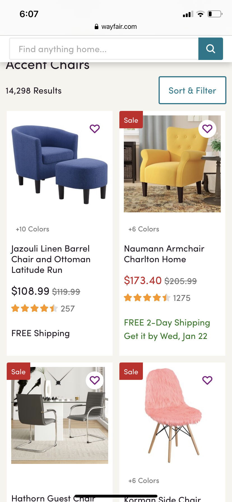
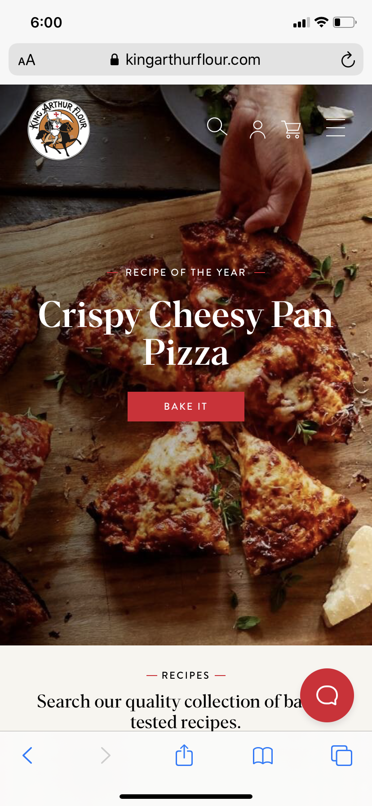

White Space
Seattle Art Museum
seattleartmuseum.org The Seattle Art Museum uses white space in their homepage design where there are blank areas around the page elements. For example, there is empty space around the text and boxes on the page. This helps group related information and separate different topics on the page. The white space also creates a sleek, simple look and prevents the page from looking cluttered.
Alignment
Wayfair
wayfair.com Wayfair's search pages use alignment to create a structural layout. The accent chair listings are arranged in two columns with all listings aligning both horizontally and vertically. This keeps the page looking organized and clear while still presenting a large amount of information and images. This organization leads to a better user experience.
Visual Hierarchy
King Arthur Flour
kingarthurflour.com King Arthur Flour's homepage demonstrates visual hierarchy when different parts of the website appear more important than others due to the design. For example, the "bake it" button is a similar size to the "recipe of the year" text above it, but with the added red background, it has a higher visual hierarchy than the text. This works well for a call to action.